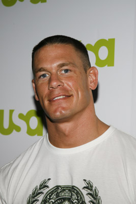

World Wrestling Entertainment (WWE) is the world's largest professional wrestling promotion, entertaining millions of fans across the globe. WWE combines athletic competition, storytelling, and unforgettable characters to create one of the most exciting forms of sports entertainment. From dramatic championship matches to legendary rivalries, WWE has been a major part of popular culture for decades.
Famous WWE Events
WWE is known for hosting some of the biggest annual events in sports entertainment:
WrestleMania, WWE's biggest event of the year, often called "The Grandest Stage of Them All."
Royal Rumble, A unique match where multiple superstars enter the ring at timed intervals, with the winner earning a championship opportunity.
SummerSlam, One of WWE's longest-running and most prestigious premium live events.
Survivor Series, Famous for team-based elimination matches and historic rivalries.
Legendary WWE Superstars
Over the years, WWE has featured many iconic wrestlers who helped shape the industry:
John Cena
One of the most successful WWE superstars of all time, John Cena is known for his incredible work ethic, numerous championship victories, and the famous catchphrase " Never Give Up." His influence extends beyond wrestling into movies, television, and charity work.
The Undertaker
Known for his dark and mysterious character, The Undertaker built one of the most legendary careers in WWE history and became famous for his remarkable WrestleMania winning streak.
Stone Cold Steve Austin
A symbol of the Attitude Era, Stone Cold became one of WWE's most popular stars thanks to his rebellious attitude and memorable rivalry with WWE management.
The Rock
Known for his charisma and electrifying personality, The Rock became a global superstar both inside and outside the wrestling ring.
Hulk Hogan
One of the biggest stars of the 1980s, Hulk Hogan helped bring professional wrestling into mainstream entertainment and inspired generations of fans.
WWE Today
Modern WWE continues to showcase talented superstars, exciting championships, and international events watched by millions worldwide. With a rich history, legendary athletes, and passionate fans, WWE remains one of the most recognizable brands in sports entertainment.

John Cena is a professional wrestler and actor. He won a total of 31 championships. With his signature move, the "Cena" finisher, he has become one of the most recognizable figures in professional wrestling.